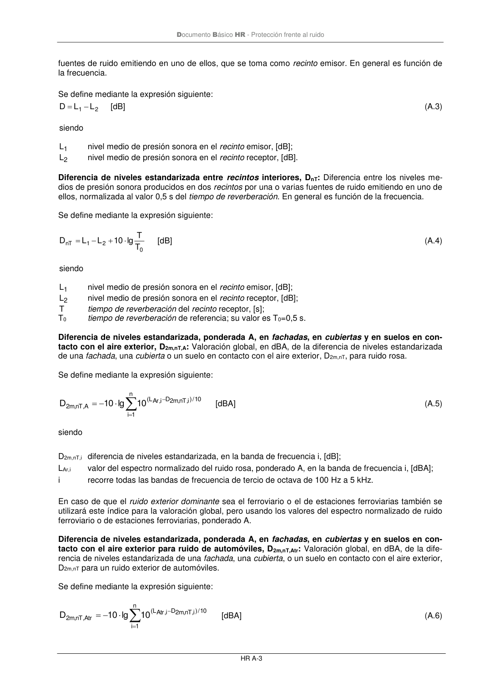

DB-HR Protección frente al ruido · edición 2019-12-20 · capa oficial
Documento DB-HR-oficial · SHA-256 del PDF a67baeca5138bb1f121f797d23a79a4557bd9ac4abacd954024893e05411eeab
Copia fiel del PDF fuente · Fuente oficial
Ficha de la disposición en la fuente oficial
Formatos: JSON del segmento · Markdown
= − − = n 1 i 10 /)i, nT , m 2 D i, Ar L ( A , nT , m 2 10 lg 10 D [dBA] (A.5) siendo D2m,nT,idiferencia de niveles estandarizada, en la banda de frecuencia i, [dB]; LAr,i valor del espectro normalizado del ruido rosa, ponderado A, en la banda de frecuencia i, [dBA]; i recorre todas las bandas de frecuencia de tercio de octava de 100 Hz a 5 kHz. En caso de que el ruido exterior dominante sea el ferroviario o el de estaciones ferroviarias también se utilizará este índice para la valoración global, pero usando los valores del espectro normalizado de ruido ferroviario o de estaciones ferroviarias, ponderado A. Diferencia de niveles estandarizada, ponderada A, en fachadas, en cubiertas y en suelos en con- tacto con el aire exterior para ruido de automóviles, D2m,nT,Atr: Valoración global, en dBA, de la dife- rencia de niveles estandarizada de una fachada, una cubierta, o un suelo en contacto con el aire exterior, D2m,nT para un ruido exterior de automóviles. Se define mediante la expresión siguiente: = − − = n 1 i 10 /)i, nT , m 2 D i, Atr L ( Atr , nT , m 2 10 lg 10 D [dBA] (A.6)
